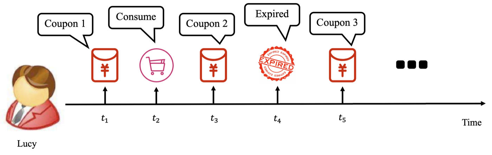
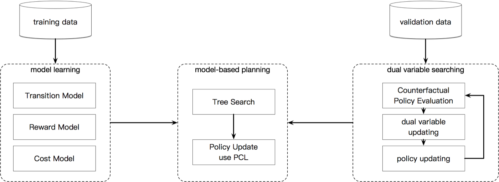
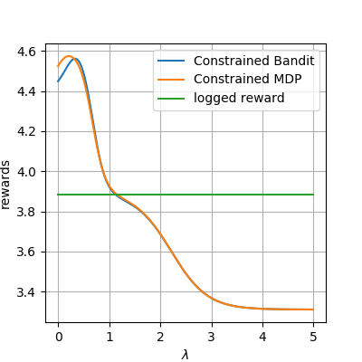
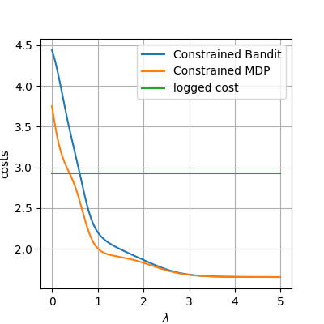

- \(r - \lambda c\)予算制約をラグランジュ緩和で目的関数に入れると、各時点の報酬から費用の \(\lambda\) 倍を引いた値が新しい報酬になる。\(\lambda\) を固定すれば、制約のない強化学習の問題になる。
- λ を二分探索\(\lambda\) を大きくすると、最適方策の費用は増えない（定理 1）。この単調性を使い、予算に収まる \(\lambda\) を区間を半分ずつ狭めて探す。
- 費用 −9.40%Alipay のデータで、ランダム配布と同じ報酬 0.687 を得るのに必要な費用は 0.532 から 0.482 に下がった（Table 2）。
紅包を繰り返し配る施策では、予算を超えないことを配る前にログデータで確かめる必要がある
Alipay は販促キャンペーンの期間中、利用者に額の異なる紅包を数日にわたって繰り返し配る。紅包は使われると費用になる。プラットフォームの目的は全体の予算の範囲で、紅包が使われた回数などの利用度を最大にすることである。論文はこれを逐次インセンティブマーケティングと呼ぶ。
難しさは二つある。一つは、観測できるのが実際に配った紅包への反応だけ（バンディットフィードバック）で、ほかの額を配った場合の結果は分からないこと。もう一つは、配った予算は取り戻せないため、方策をオンラインで試しながら学ぶことができず、最適性と、予算を超えないかどうかをログデータの上で事前に評価しなければならないことである。既存の制約つきバンディットは連続する配布の間の依存を扱わず、制約つき方策最適化（CPO など）は環境との対話でデータを集めるオンポリシー学習に頼る、と論文は整理している。

予算つきの配布を制約つき MDP として書き、ラグランジュ緩和で報酬 r − λc の問題に置き換える
状態 \(s\) は利用者の特徴、行動 \(a\) は配る紅包（額）の候補、\(R(s,a)\) は報酬、\(C(s,a)\) は費用である。ログは過去の行動方策 \(\pi_b\) で集めたもので、状態、行動、傾向スコア、報酬、費用、次の状態の組が並ぶ。方策 \(\pi\) の累積割引報酬を \(J(\pi)\)、累積割引費用を \(J_C(\pi)\) とすると、問題は次のように書ける。
ラグランジュ乗数（双対変数）\(\lambda \ge 0\) で制約を目的関数に入れると、ラグランジアンは \(L(\pi,\lambda) = -J(\pi) + \lambda\,(J_C(\pi) - b)\) となる。費用は報酬と同じく各時点の行動から発生するので、二つをまとめて一つの報酬にできる。
\(\lambda\) を固定すれば、これは制約のない MDP であり、DQN のような通常の強化学習でバッチ学習できる。論文は、報酬が高く費用が低い行動を好むという解釈のしやすさと、ミニバッチ学習との相性のよさを利点に挙げる。さらにエントロピー正則化を加えた Soft-Q 型の方策も示し、最適方策を \(\pi^*(a\mid s) = \exp\{(Q^*(s,a) - V^*(s))/\rho\}\) の形で与えている。
λ を大きくしても費用は増えないので、予算に合う λ は二分探索で決められる
論文はまず二つの仮定を置く。最も安い行動だけを選ぶ方策は予算を厳密に満たし（仮定 1）、最も高い行動だけを選ぶ方策は予算を超える（仮定 2）。このとき最適な双対変数は存在して正である（命題 1）。最も高い行動だけを選ぶ方策でも予算を超えないなら、制約は効かず、ふつうの MDP に戻る。
定理 1 は \(\lambda_a > \lambda_b\) なら、それぞれの \(\lambda\) での最適方策について \(J_C(\pi_{\lambda_a}) \le J_C(\pi_{\lambda_b})\) が成り立つことを示す。証明では、二つの方策がそれぞれの \(\lambda\) でラグランジアンを最小にすることから出る二つの不等式を足し合わせる。費用が \(\lambda\) について単調なので、下限と上限の中点で方策を学習し、検証用ログ上で費用を反実仮想評価（Doubly Robust 推定）で見積もり、予算を超えるか否かで区間を半分にすればよい。論文は、二分探索のほうが勾配で \(\lambda\) を少しずつ動かす双対上昇法より速く収束するとしている。
\(\lambda\) の上限は、報酬と費用が同じ順に並ぶという仮定 3（費用の高い行動ほど報酬も高い）のもとで、最も安い行動が \(r - \lambda c\) で最大になる値として求める（付録 B）。なお、論文の Algorithm 1 の擬似コードでは、見積もった費用が予算を下回るときに下限 \(\lambda_l\) を中点に上げる書き方になっている。定理 1 に従えば、予算に余裕があるときは \(\lambda\) を下げる向きに探すことになる（解説者の注）。
環境モデルを一度だけ学習して木探索で計画すれば、λ ごとに方策を学び直さずに済む
二分探索でも、試す \(\lambda\) の数だけ方策を学習し直す必要がある。そこで論文はモデル予測制御（MPC）の考え方を使う。ログから状態遷移モデル（順伝播ニューラルネットの回帰）、報酬モデル（Wide&Deep）、費用モデル（Wide&Deep の回帰）を一度だけ学習し、現在の状態から深さ \(h\) の探索木をたどって Q 値を計算し、Soft-Q の式で方策を得る。
\(\lambda\) を変えても、学習済みのモデルはそのまま使える。変わるのは木の上で計算する報酬 \(r - \lambda c\) だけなので、方策の再学習なしにさまざまな \(\lambda\) を検証できる。論文は、行動空間が大きい場合や計画の期間が長い場合の扱いを今後の課題としている。また、モデルの予測精度が基準に届かなければ、高速化をやめて元の再学習の方法に戻せばよいと述べている。

合成データでは、モデルを使う計画は再学習ありとほぼ同じ報酬を出し、制約つき MDP は同じ予算でランダムより 16.11% 高い報酬を得た
比較対象はすべての行動を一様な確率で配るランダム方策、時点間の依存を考えない 1 ステップの制約つき文脈バンディット、そして提案の制約つき MDP（二分探索のみ、およびモデルベース高速化つき）である。合成データは 2 ステップの逐次バンディットで、行動はログでは一様に選ばれ、行動の番号が大きいほど報酬と費用の平均が高くなるように作られている。
二分探索だけで解いた場合とモデルベース高速化を使った場合は、さまざまな予算でほぼ同じ報酬になった。二分探索だけで解く場合の計算量はモデルベース高速化の \(O(n)\) 倍（\(n\) は \(\lambda\) の探索回数）になる、と論文は述べる。検証データ上の費用は \(\lambda\) とともに単調に減り（図4 右）、定理 1 を実験で確かめた形になっている。
予算をランダム方策の費用と同じ \(b = 2.9295\) に固定すると、報酬はランダム 3.8836、制約つきバンディット 4.4006（+13.31%）、制約つき MDP 4.5093（+16.11%）だった（Table 1）。


Alipay のデータでは、ランダム配布と同じ報酬を制約つき MDP は 9.40% 少ない費用で達成した
実データは、Alipay が数日にわたって紅包を配ったキャンペーンのログである。紅包の額を行動とし、その額をそのまま費用、利用者が翌日にアクティブかどうかを報酬とする。論文は、額が大きいほど翌日アクティブになる確率が高いので仮定 3 が成り立つと述べている。報酬モデルと費用モデルの予測誤差は小さく、費用はここでも \(\lambda\) とともに減った。
予算をランダム方策の費用 \(b = 0.532\) に固定すると、報酬はランダム 0.687、制約つきバンディット 0.688（+0.145%）、制約つき MDP 0.693（+0.873%）だった。逆に報酬を 0.687 に固定すると、必要な費用は制約つきバンディットで 0.503（−5.46%）、制約つき MDP で 0.482（−9.40%）となった（Table 2）。
なお本文では、予算を固定した場合の改善を 8.97%（制約つきバンディット）と 13.61%（制約つき MDP）と書いている。一方、Table 2 の括弧内の値は 0.145% と 0.873% で、表の報酬の値から計算した増加率もこちらに一致する。このページの図は表の値を使っている。
このページの数値と図は arXiv v1（2023 年 3 月 2 日、CC BY 4.0）の本文と表による。CIKM 2019 の出版版（ACM Digital Library）の本文は取得できなかったため、照合していない。
全体の予算をラグランジュ乗数一つで扱い、逐次の多値処置に広げている
この論文が推定するのは、報酬、費用、状態遷移の各モデルと、それを使って計算する Q 値である。処置しない場合との差（アップリフト）を明示的に推定するわけではない。ただし、同じ状態の中で行動を比べる限り、どの行動にも共通する基準値を引いても選ばれる行動は変わらないので、行動間の報酬の差を比べていることになる（解説者の注）。費用は紅包の額そのもの（使われたときに発生する）で、処置は額を選ぶ多値の処置であり、それを日ごとに繰り返す。
予算制約は全体の期待累積費用 \(J_C(\pi) \le b\) として明示的に扱う。予算を利用者ごとに配るのではなく、ラグランジュ乗数 \(\lambda\) を一つ決め、各利用者・各時点で \(r - \lambda c\)（逐次の場合は将来分も含めた Q 値）が最大の行動を選ぶ。予算を守れているかは検証用ログでの反実仮想評価で確かめる。
1 ステップで「配る・配らない」の二択なら、配る場合の \(r - \lambda c\) が配らない場合の \(r\) を上回るという条件は、報酬の増分と費用の比が \(\lambda\) を超えることと同じである。これは、ROI の高い順に予算が尽きるまで配る割当て（ナップザック問題の連続緩和）と同じ形である。\(\lambda\) はその双対価格にあたり、多値の場合は多選択ナップザック問題のラグランジュ緩和に対応する（解説者の注）。論文はナップザック問題との関係には触れていない。その代わり、時点間の依存を Q 値に入れることで、1 ステップの制約つきバンディットとの違いを出している。
@inproceedings{xiao2019model,
title = {Model-based Constrained {MDP} for Budget Allocation in Sequential Incentive Marketing},
author = {Xiao, Shuai and Guo, Le and Jiang, Zaifan and Lv, Lei and Chen, Yuanbo and Zhu, Jun and Yang, Shuang},
booktitle = {Proceedings of the 28th ACM International Conference on Information and Knowledge Management},
pages = {971--980},
year = {2019},
publisher = {ACM},
doi = {10.1145/3357384.3358031}
}